Last updated: 2026-02-25
Checks: 7 0
Knit directory: muse/
This reproducible R Markdown analysis was created with workflowr (version 1.7.2). The Checks tab describes the reproducibility checks that were applied when the results were created. The Past versions tab lists the development history.
Great! Since the R Markdown file has been committed to the Git repository, you know the exact version of the code that produced these results.
Great job! The global environment was empty. Objects defined in the global environment can affect the analysis in your R Markdown file in unknown ways. For reproduciblity it’s best to always run the code in an empty environment.
The command set.seed(20200712) was run prior to running
the code in the R Markdown file. Setting a seed ensures that any results
that rely on randomness, e.g. subsampling or permutations, are
reproducible.
Great job! Recording the operating system, R version, and package versions is critical for reproducibility.
Nice! There were no cached chunks for this analysis, so you can be confident that you successfully produced the results during this run.
Great job! Using relative paths to the files within your workflowr project makes it easier to run your code on other machines.
Great! You are using Git for version control. Tracking code development and connecting the code version to the results is critical for reproducibility.
The results in this page were generated with repository version b169bd8. See the Past versions tab to see a history of the changes made to the R Markdown and HTML files.
Note that you need to be careful to ensure that all relevant files for
the analysis have been committed to Git prior to generating the results
(you can use wflow_publish or
wflow_git_commit). workflowr only checks the R Markdown
file, but you know if there are other scripts or data files that it
depends on. Below is the status of the Git repository when the results
were generated:
Ignored files:
Ignored: .Rproj.user/
Ignored: data/1M_neurons_filtered_gene_bc_matrices_h5.h5
Ignored: data/293t/
Ignored: data/293t_3t3_filtered_gene_bc_matrices.tar.gz
Ignored: data/293t_filtered_gene_bc_matrices.tar.gz
Ignored: data/5k_Human_Donor1_PBMC_3p_gem-x_5k_Human_Donor1_PBMC_3p_gem-x_count_sample_filtered_feature_bc_matrix.h5
Ignored: data/5k_Human_Donor2_PBMC_3p_gem-x_5k_Human_Donor2_PBMC_3p_gem-x_count_sample_filtered_feature_bc_matrix.h5
Ignored: data/5k_Human_Donor3_PBMC_3p_gem-x_5k_Human_Donor3_PBMC_3p_gem-x_count_sample_filtered_feature_bc_matrix.h5
Ignored: data/5k_Human_Donor4_PBMC_3p_gem-x_5k_Human_Donor4_PBMC_3p_gem-x_count_sample_filtered_feature_bc_matrix.h5
Ignored: data/97516b79-8d08-46a6-b329-5d0a25b0be98.h5ad
Ignored: data/Parent_SC3v3_Human_Glioblastoma_filtered_feature_bc_matrix.tar.gz
Ignored: data/brain_counts/
Ignored: data/cl.obo
Ignored: data/cl.owl
Ignored: data/jurkat/
Ignored: data/jurkat:293t_50:50_filtered_gene_bc_matrices.tar.gz
Ignored: data/jurkat_293t/
Ignored: data/jurkat_filtered_gene_bc_matrices.tar.gz
Ignored: data/pbmc20k/
Ignored: data/pbmc20k_seurat/
Ignored: data/pbmc3k.csv
Ignored: data/pbmc3k.csv.gz
Ignored: data/pbmc3k.h5ad
Ignored: data/pbmc3k/
Ignored: data/pbmc3k_bpcells_mat/
Ignored: data/pbmc3k_export.mtx
Ignored: data/pbmc3k_matrix.mtx
Ignored: data/pbmc3k_seurat.rds
Ignored: data/pbmc4k_filtered_gene_bc_matrices.tar.gz
Ignored: data/pbmc_1k_v3_filtered_feature_bc_matrix.h5
Ignored: data/pbmc_1k_v3_raw_feature_bc_matrix.h5
Ignored: data/refdata-gex-GRCh38-2020-A.tar.gz
Ignored: data/seurat_1m_neuron.rds
Ignored: data/t_3k_filtered_gene_bc_matrices.tar.gz
Ignored: r_packages_4.5.2/
Untracked files:
Untracked: .claude/
Untracked: CLAUDE.md
Untracked: analysis/.claude/
Untracked: analysis/aucc.Rmd
Untracked: analysis/bioc.Rmd
Untracked: analysis/bioc_scrnaseq.Rmd
Untracked: analysis/chick_weight.Rmd
Untracked: analysis/likelihood.Rmd
Untracked: analysis/modelling.Rmd
Untracked: analysis/wordpress_readability.Rmd
Untracked: bpcells_matrix/
Untracked: data/Caenorhabditis_elegans.WBcel235.113.gtf.gz
Untracked: data/GCF_043380555.1-RS_2024_12_gene_ontology.gaf.gz
Untracked: data/SeuratObj.rds
Untracked: data/arab.rds
Untracked: data/astronomicalunit.csv
Untracked: data/davetang039sblog.WordPress.2026-02-12.xml
Untracked: data/femaleMiceWeights.csv
Untracked: data/lung_bcell.rds
Untracked: m3/
Untracked: women.json
Unstaged changes:
Modified: analysis/isoform_switch_analyzer.Rmd
Modified: analysis/linear_models.Rmd
Note that any generated files, e.g. HTML, png, CSS, etc., are not included in this status report because it is ok for generated content to have uncommitted changes.
These are the previous versions of the repository in which changes were
made to the R Markdown (analysis/complex_heatmap.Rmd) and
HTML (docs/complex_heatmap.html) files. If you’ve
configured a remote Git repository (see ?wflow_git_remote),
click on the hyperlinks in the table below to view the files as they
were in that past version.
| File | Version | Author | Date | Message |
|---|---|---|---|---|
| Rmd | b169bd8 | Dave Tang | 2026-02-25 | Exporting heatmaps |
| html | 121244c | Dave Tang | 2026-02-25 | Build site. |
| Rmd | aeb0c0b | Dave Tang | 2026-02-25 | Update notebook |
| html | d10d811 | Dave Tang | 2025-10-24 | Build site. |
| Rmd | 8915164 | Dave Tang | 2025-10-24 | You can make UpSet plots with ComplexHeatmap |
| html | 7b31570 | Dave Tang | 2023-11-01 | Build site. |
| Rmd | 3e13eb5 | Dave Tang | 2023-11-01 | ComplexHeatmap |
ComplexHeatmap
is an R/Bioconductor package developed by Zuguang Gu that provides a
highly flexible framework for drawing heatmaps. While simpler packages
like pheatmap or heatmap2 are fine for quick
visualisations, ComplexHeatmap excels when you need:
The comprehensive reference book is freely available at https://jokergoo.github.io/ComplexHeatmap-reference/book/.
Install the stable version from Bioconductor.
BiocManager::install("ComplexHeatmap")
# circlize is used for colorRamp2(), a flexible colour mapping helper
install.packages("circlize")Download example RNA-seq count data (TagSeq format). We keep only genes with a high total count so the heatmap is not too crowded.
example_file <- "https://davetang.org/file/TagSeqExample.tab"
data <- read.delim(example_file, header = TRUE, row.names = "gene")
data_subset <- as.matrix(data[rowSums(data) > 50000, ])
dim(data_subset)[1] 49 6head(data_subset) T1a T1b T2 T3 N1 N2
Gene_00562 32314 29693 66140 17973 47994 30878
Gene_02115 15261 23301 1944 4578 4087 1072
Gene_02296 6730 5389 14491 15620 29445 14653
Gene_02420 5827 3938 18800 5592 26430 9071
Gene_02800 5961 7833 10303 15709 17405 10946
Gene_03194 7611 6806 13506 5727 25020 9235The six columns are biological samples; each row is a gene. Values are raw counts.
Raw counts vary enormously between genes — a highly-expressed gene can have counts hundreds of times larger than a lowly-expressed one. If we colour the heatmap on the raw scale, the colour gradient is dominated by the most abundant genes and most rows look uniformly blue (low) regardless of their actual expression pattern.
Z-score row scaling transforms each row so that it has mean 0 and standard deviation 1:
\[z_i = \frac{x_i - \bar{x}}{\text{sd}(x)}\]
After this transformation the colour of each cell reflects how far that sample is from the gene’s own mean, not the absolute expression level. This makes cross-gene patterns — e.g. a cluster of genes all up-regulated in one condition — visually apparent.
| Direction | What is normalised | Typical use |
|---|---|---|
Row (apply(mat, 1, ...)) |
Each gene across samples | Compare sample patterns per gene |
Column (apply(mat, 2, ...)) |
Each sample across genes | Compare gene patterns per sample (rare) |
Row scaling is by far the more common choice in genomics.
cal_z_score <- function(x) (x - mean(x)) / sd(x)
# Apply row-wise: MARGIN = 1
data_subset_norm <- t(apply(data_subset, 1, cal_z_score))
# Sanity check — each row should now have mean ≈ 0 and sd ≈ 1
round(head(rowMeans(data_subset_norm)), 10)Gene_00562 Gene_02115 Gene_02296 Gene_02420 Gene_02800 Gene_03194
0 0 0 0 0 0 round(head(apply(data_subset_norm, 1, sd)), 10)Gene_00562 Gene_02115 Gene_02296 Gene_02420 Gene_02800 Gene_03194
1 1 1 1 1 1 Placing the raw and z-scored heatmaps next to each other makes the benefit of scaling clear.
ht_raw <- Heatmap(data_subset, column_title = "Raw counts", name = "counts")
ht_norm <- Heatmap(data_subset_norm, column_title = "Z-score", name = "z-score")
ht_raw + ht_norm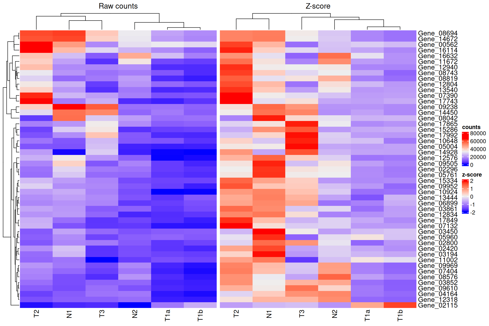
| Version | Author | Date |
|---|---|---|
| 121244c | Dave Tang | 2026-02-25 |
The default blue-to-red diverging palette works well for z-scores,
but you can be explicit with colorRamp2() from the
circlize package. Symmetric limits (e.g. −2 to +2)
ensure that zero (the gene mean) always maps to white.
col_fun <- colorRamp2(c(-2, 0, 2), c("blue", "white", "red"))
Heatmap(
data_subset_norm,
name = "z-score",
col = col_fun,
column_title = "Z-score normalised expression",
row_title = paste(nrow(data_subset_norm), "genes"),
column_names_rot = 45
)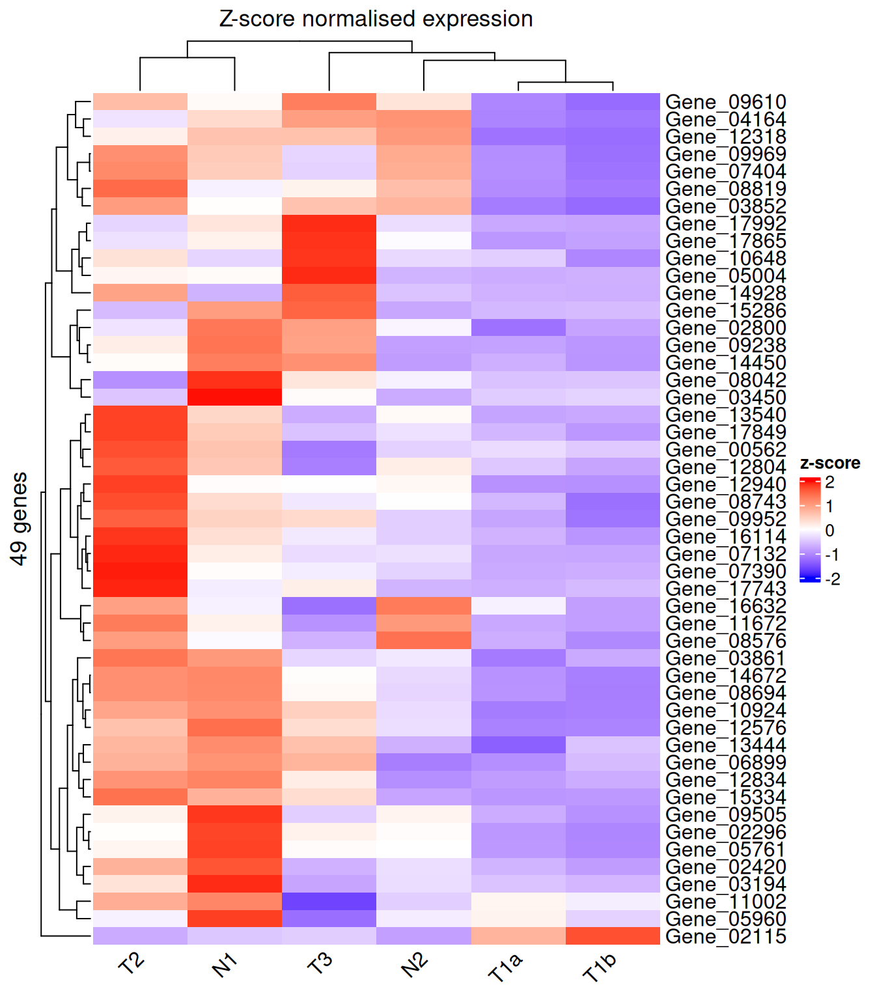
| Version | Author | Date |
|---|---|---|
| 121244c | Dave Tang | 2026-02-25 |
Values beyond ±2 are clipped to the extreme colours, which is usually desirable — it prevents a single outlier gene from washing out the rest of the palette.
column_title / row_title label the heatmap
body; name is the title shown above the colour legend.
Heatmap(
data_subset_norm,
name = "z-score",
column_title = "Samples",
row_title = "Genes",
col = col_fun
)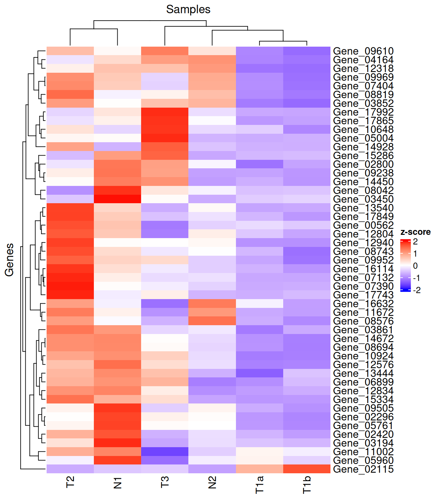
| Version | Author | Date |
|---|---|---|
| 121244c | Dave Tang | 2026-02-25 |
Heatmap(
data_subset_norm,
name = "z-score",
col = col_fun,
cluster_rows = FALSE,
cluster_columns = FALSE,
column_title = "No clustering"
)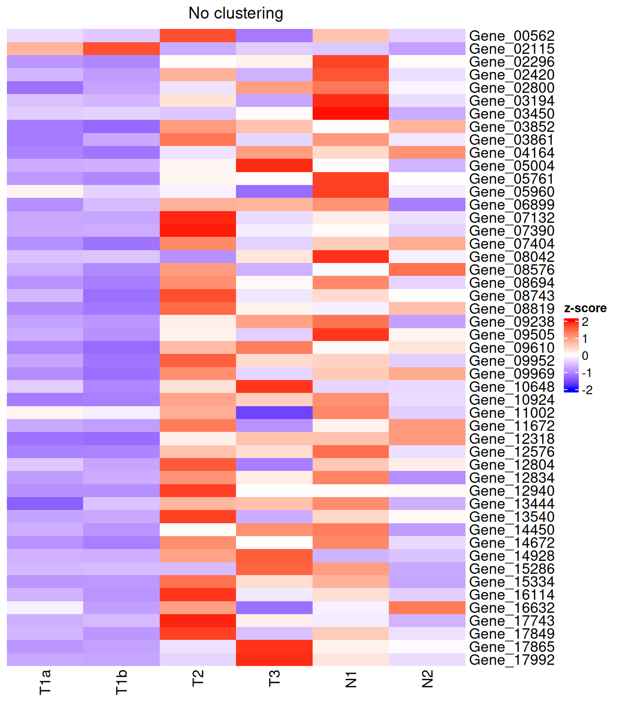
| Version | Author | Date |
|---|---|---|
| 121244c | Dave Tang | 2026-02-25 |
Annotations are one of the most powerful features of ComplexHeatmap. They sit alongside the heatmap body and convey additional metadata about samples (column annotations) or genes (row annotations).
We will build a small synthetic dataset with clear group structure to make the annotations easy to read.
set.seed(42)
n_genes <- 20
n_samples <- 12
# Simulate two conditions with 6 replicates each
condition <- rep(c("Control", "Treatment"), each = 6)
batch <- rep(c("Batch1", "Batch2", "Batch1", "Batch2", "Batch1", "Batch2"), 2)
# Generate a matrix where Treatment genes have higher expression
mat <- matrix(rnorm(n_genes * n_samples), nrow = n_genes, ncol = n_samples)
mat[1:10, 7:12] <- mat[1:10, 7:12] + 2 # first 10 genes up in Treatment
rownames(mat) <- paste0("Gene", seq_len(n_genes))
colnames(mat) <- paste0(condition, "_", seq_len(n_samples))HeatmapAnnotation() accepts:
anno_*() functions → barplots,
boxplots, density, text, etc.# Custom colour maps for categorical annotations
cond_colours <- c(Control = "#4393C3", Treatment = "#D6604D")
batch_colours <- c(Batch1 = "#F1A340", Batch2 = "#998EC3")
col_ha <- HeatmapAnnotation(
Condition = condition,
Batch = batch,
MeanExpr = colMeans(mat), # continuous: shown as gradient
col = list(
Condition = cond_colours,
Batch = batch_colours,
MeanExpr = colorRamp2(c(-1, 0, 1), c("white", "grey60", "black"))
),
annotation_name_side = "left"
)
Heatmap(
mat,
name = "expr",
top_annotation = col_ha,
column_title = "Samples with column annotations",
show_column_names = FALSE
)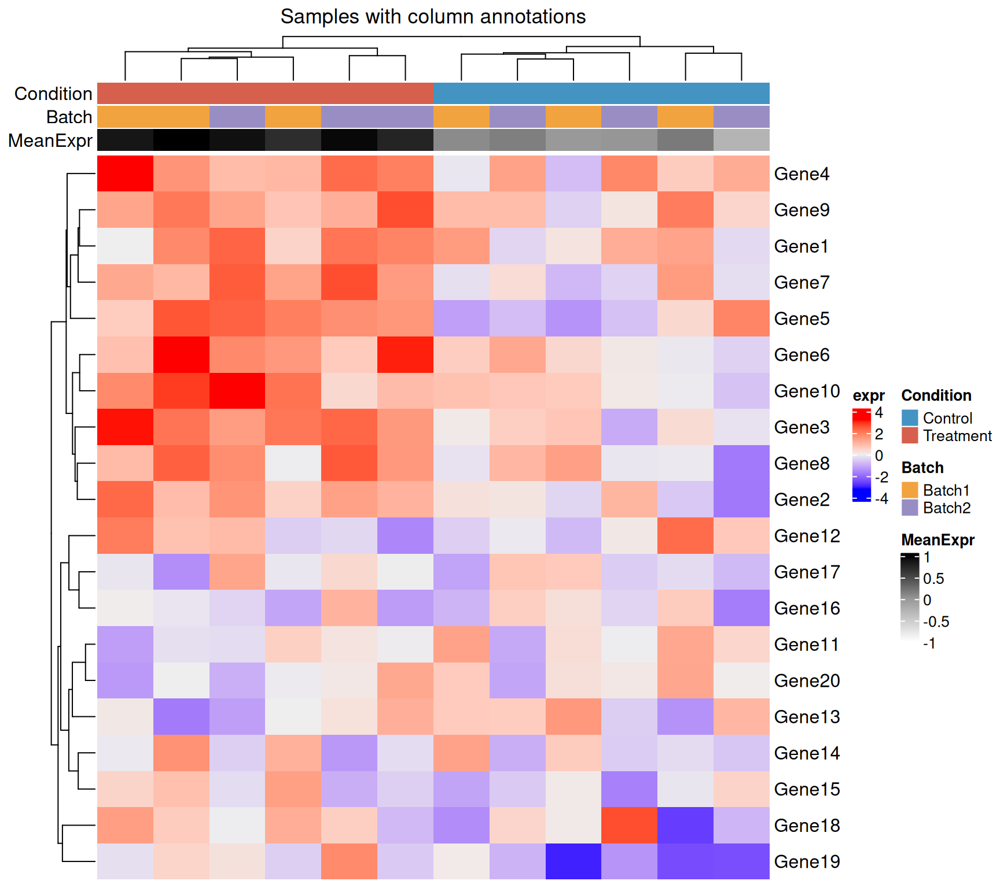
| Version | Author | Date |
|---|---|---|
| 121244c | Dave Tang | 2026-02-25 |
rowAnnotation() works the same way but applies to rows.
A common use case is to annotate genes with their log-fold change or
membership in a pathway.
gene_group <- rep(c("Up", "Down"), each = 10)
lfc <- rnorm(n_genes, mean = ifelse(gene_group == "Up", 1.5, -1.5), sd = 0.5)
row_ha <- rowAnnotation(
Group = gene_group,
LFC = lfc,
col = list(
Group = c(Up = "#D6604D", Down = "#4393C3"),
LFC = colorRamp2(c(-3, 0, 3), c("blue", "white", "red"))
),
annotation_name_side = "top"
)
Heatmap(
mat,
name = "expr",
top_annotation = col_ha,
right_annotation = row_ha,
column_title = "Heatmap with column and row annotations",
show_column_names = FALSE
)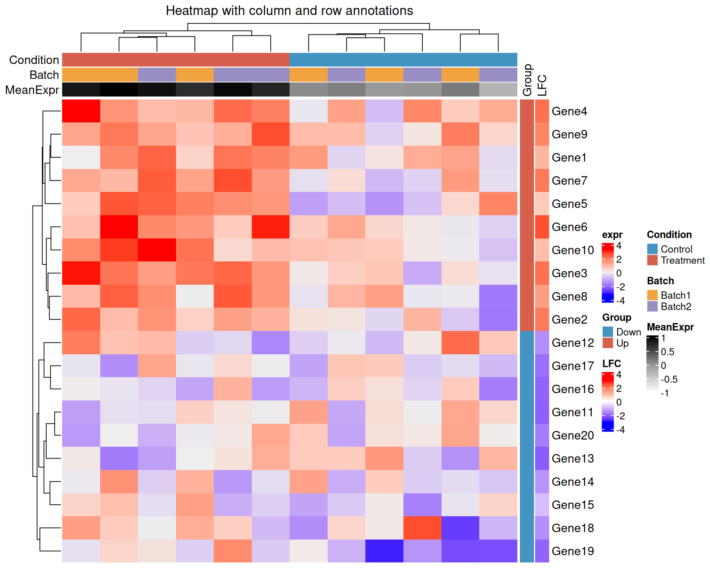
| Version | Author | Date |
|---|---|---|
| 121244c | Dave Tang | 2026-02-25 |
anno_barplot() and anno_boxplot() let you
display summary statistics directly alongside the heatmap, saving the
need for a separate figure.
col_ha2 <- HeatmapAnnotation(
Condition = condition,
MeanExpr = anno_barplot(colMeans(mat), height = unit(2, "cm")),
col = list(Condition = cond_colours)
)
row_ha2 <- rowAnnotation(
BoxExpr = anno_boxplot(mat, width = unit(3, "cm"))
)
Heatmap(
mat,
name = "expr",
top_annotation = col_ha2,
right_annotation = row_ha2,
show_column_names = FALSE,
column_title = "Bar and box plot annotations"
)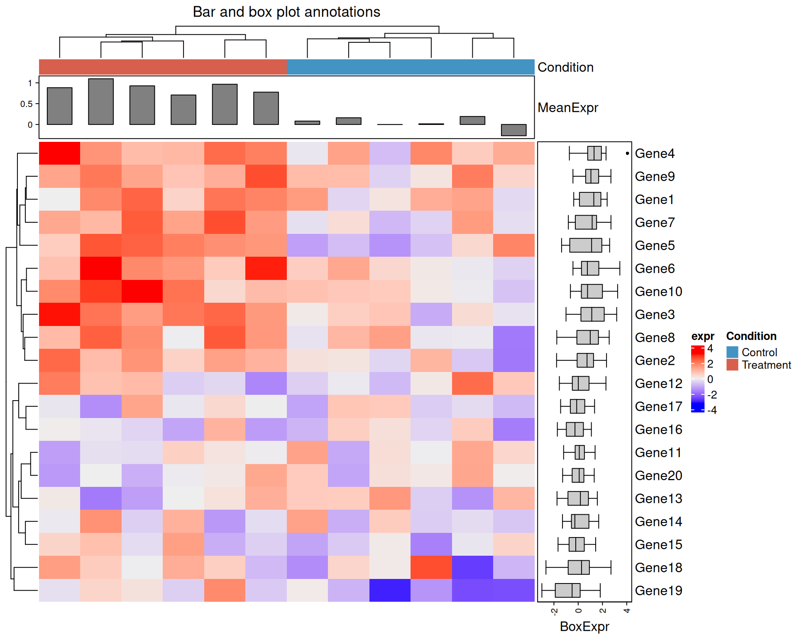
| Version | Author | Date |
|---|---|---|
| 121244c | Dave Tang | 2026-02-25 |
anno_text() is useful for labelling a small number of
important genes or samples directly on the plot rather than relying on
axis labels.
# Highlight the top 5 most variable genes
gene_vars <- apply(mat, 1, var)
top5 <- names(sort(gene_vars, decreasing = TRUE))[1:5]
gene_label <- ifelse(rownames(mat) %in% top5, rownames(mat), "")
row_ha3 <- rowAnnotation(
Label = anno_text(gene_label, gp = gpar(fontsize = 9, fontface = "bold"))
)
Heatmap(
mat,
name = "expr",
right_annotation = row_ha3,
show_row_names = FALSE,
show_column_names = FALSE,
column_title = "Text annotation for top variable genes"
)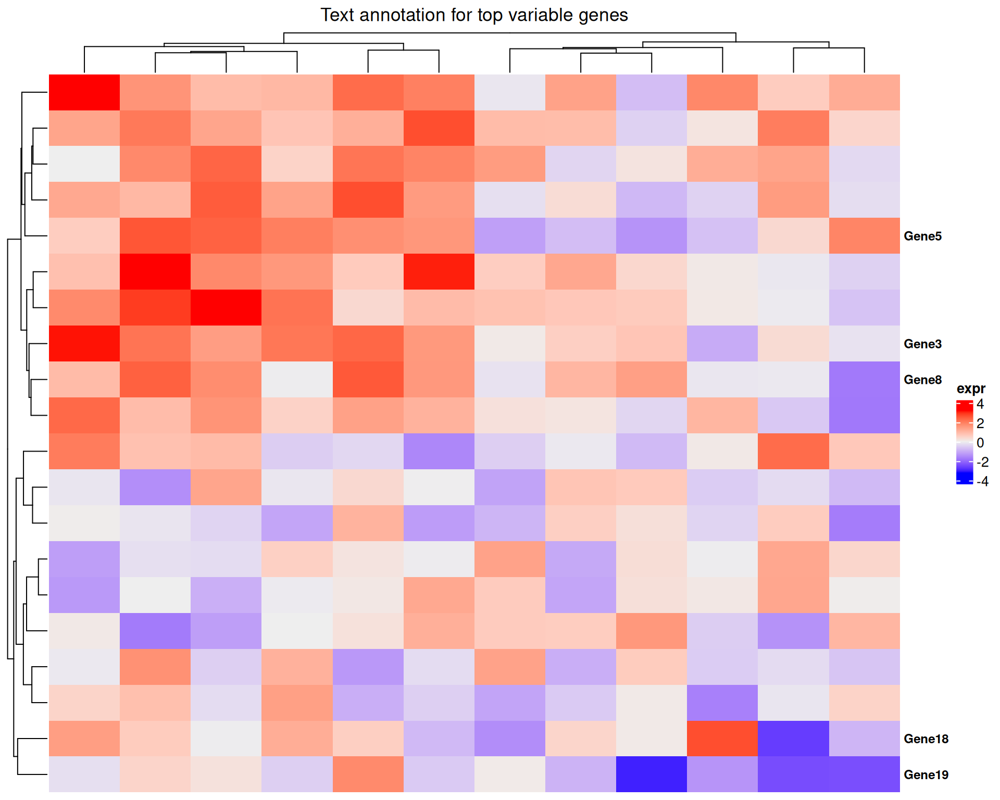
| Version | Author | Date |
|---|---|---|
| 121244c | Dave Tang | 2026-02-25 |
Splitting breaks the heatmap into visual blocks, making clusters easier to interpret. You can split by k-means clustering or by an explicit grouping factor.
Heatmap(
mat,
name = "expr",
top_annotation = col_ha,
row_km = 2, # 2 row clusters
column_km = 2, # 2 column clusters
show_column_names = FALSE,
column_title = "K-means split (k=2)"
)
| Version | Author | Date |
|---|---|---|
| 121244c | Dave Tang | 2026-02-25 |
When you already know the grouping (e.g. condition), pass it directly. This guarantees that samples from the same group are adjacent.
Heatmap(
mat,
name = "expr",
top_annotation = col_ha,
column_split = condition, # columns split by condition
row_split = gene_group, # rows split by gene group
show_column_names = FALSE,
column_title_gp = gpar(fontsize = 10, fontface = "bold"),
row_title_gp = gpar(fontsize = 10, fontface = "bold")
)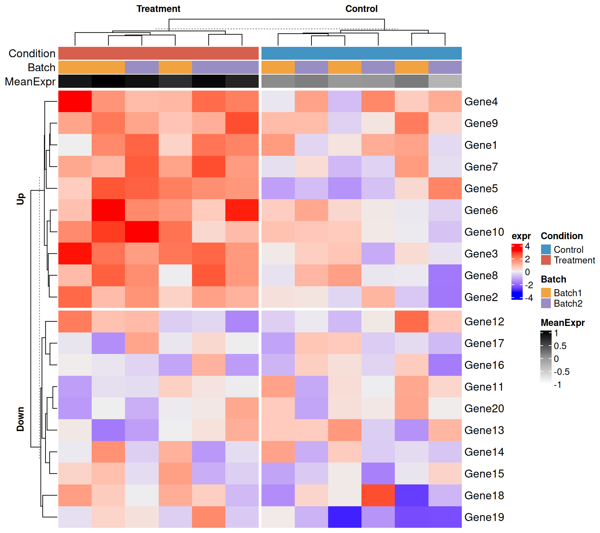
| Version | Author | Date |
|---|---|---|
| 121244c | Dave Tang | 2026-02-25 |
A publication-ready heatmap combining z-score scaling, colour scale, full annotations, and factor-based splitting.
mat_z <- t(apply(mat, 1, cal_z_score))
col_ha_final <- HeatmapAnnotation(
Condition = condition,
Batch = batch,
col = list(
Condition = cond_colours,
Batch = batch_colours
),
annotation_name_side = "left",
show_legend = TRUE
)
row_ha_final <- rowAnnotation(
Group = gene_group,
LFC = lfc,
col = list(
Group = c(Up = "#D6604D", Down = "#4393C3"),
LFC = colorRamp2(c(-3, 0, 3), c("blue", "white", "red"))
),
annotation_name_side = "top"
)
ht_final <- Heatmap(
mat_z,
name = "z-score",
col = colorRamp2(c(-2, 0, 2), c("blue", "white", "red")),
top_annotation = col_ha_final,
right_annotation = row_ha_final,
column_split = condition,
row_split = gene_group,
show_column_names = FALSE,
column_title_gp = gpar(fontsize = 11, fontface = "bold"),
row_title_gp = gpar(fontsize = 11, fontface = "bold"),
heatmap_legend_param = list(
title = "z-score",
at = c(-2, -1, 0, 1, 2),
legend_direction = "horizontal"
)
)
draw(ht_final, heatmap_legend_side = "bottom", annotation_legend_side = "bottom")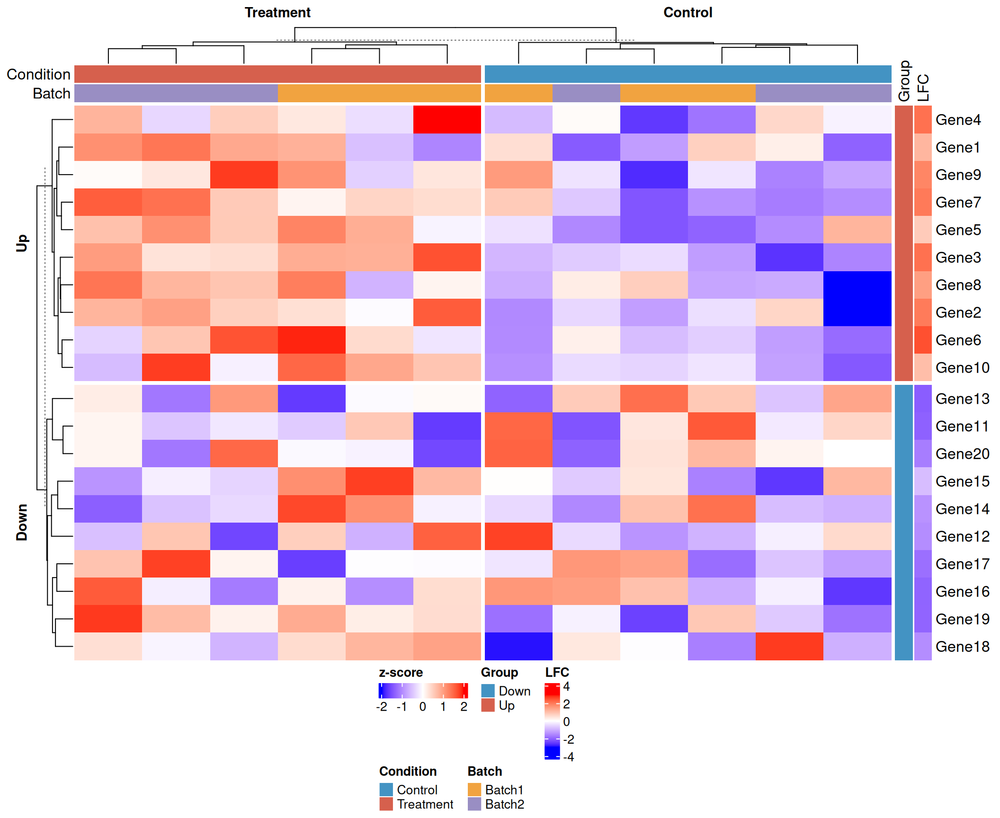
| Version | Author | Date |
|---|---|---|
| 121244c | Dave Tang | 2026-02-25 |
ComplexHeatmap has an implementation of UpSet plots that scales better than Venn diagrams for more than three sets.
Three lists.
set.seed(123)
lt <- list(a = sample(letters, 10),
b = sample(letters, 15),
c = sample(letters, 20))
m <- make_comb_mat(lt)
UpSet(m)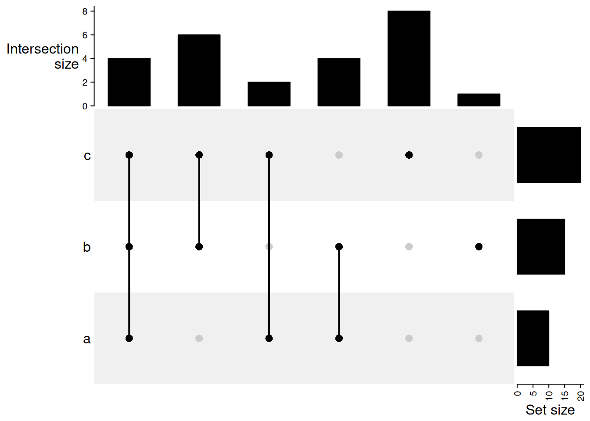
| Version | Author | Date |
|---|---|---|
| d10d811 | Dave Tang | 2025-10-24 |
union mode: 1 means in that set and 0 is not taken into account. When there are multiple 1, the relationship is OR. Then, 1 1 0 means a set of elements in set A or B, and they can also in C or not in C (union(A, B)). Under this mode, the seven combination sets can overlap.
m = make_comb_mat(lt, mode = "union")
UpSet(m)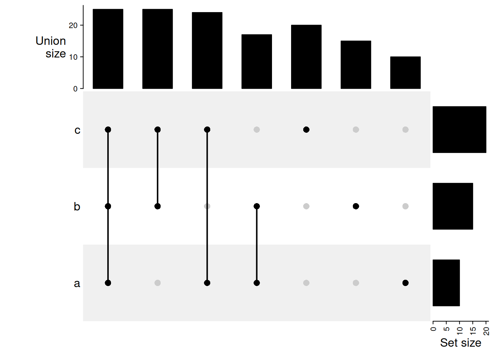
| Version | Author | Date |
|---|---|---|
| d10d811 | Dave Tang | 2025-10-24 |
With colours.
UpSet(m, comb_col = c(rep(2, 3), rep(3, 3), 1))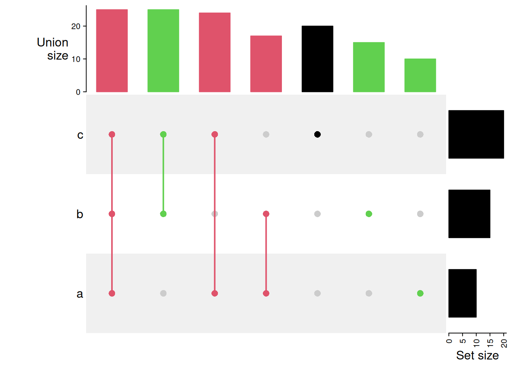
| Version | Author | Date |
|---|---|---|
| d10d811 | Dave Tang | 2025-10-24 |
Compare two UpSet plots.
set.seed(123)
lt1 = list(a = sample(letters, 10),
b = sample(letters, 15),
c = sample(letters, 20))
m1 = make_comb_mat(lt1)
set.seed(456)
lt2 = list(a = sample(letters, 10),
b = sample(letters, 15),
c = sample(letters, 20))
m2 = make_comb_mat(lt2)
max1 = max(c(set_size(m1), set_size(m2)))
max2 = max(c(comb_size(m1), comb_size(m2)))
UpSet(m1, top_annotation = upset_top_annotation(m1, ylim = c(0, max2)),
right_annotation = upset_right_annotation(m1, ylim = c(0, max1)),
column_title = "UpSet1") +
UpSet(m2, top_annotation = upset_top_annotation(m2, ylim = c(0, max2)),
right_annotation = upset_right_annotation(m2, ylim = c(0, max1)),
column_title = "UpSet2")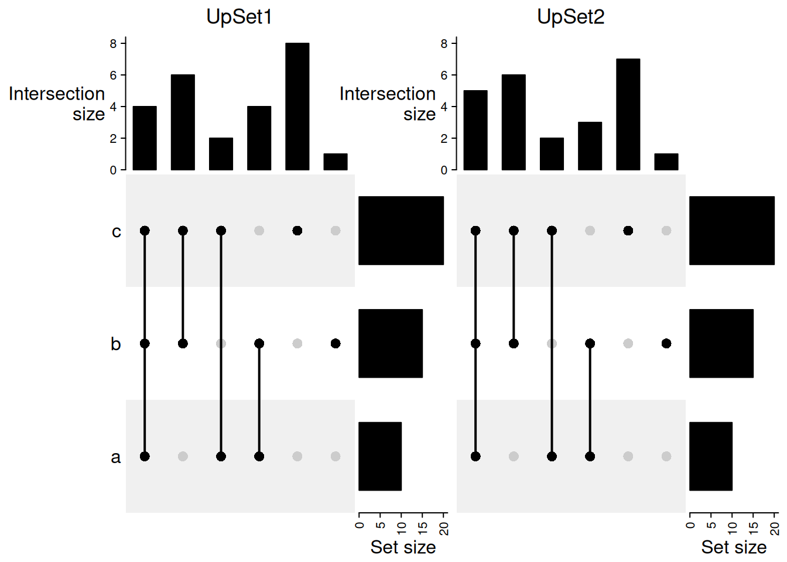
| Version | Author | Date |
|---|---|---|
| d10d811 | Dave Tang | 2025-10-24 |
ComplexHeatmap draws via the grid graphics system,
so you must open a graphics device, call draw(), and then
close the device with dev.off(). Calling png()
alone and then printing the heatmap object works too, but using
draw() gives you control over legend placement at export
time.
png(
filename = "heatmap.png",
width = 8, # inches
height = 6, # inches
units = "in",
res = 300, # dots per inch — 300 is standard for publication
bg = "white" # explicit white background (avoids transparency issues)
)
draw(ht_final, heatmap_legend_side = "bottom", annotation_legend_side = "bottom")
dev.off()| Parameter | Typical values | Notes |
|---|---|---|
width / height |
6–14 | In the units given by units |
units |
"in", "cm", "px" |
"in" is most intuitive for print |
res |
72, 150, 300, 600 | See table below |
bg |
"white", "transparent" |
Journals usually require white |
pointsize |
8–14 | Base font size in points; default is 12 |
Common res (DPI) values and their intended use:
| DPI | Use case |
|---|---|
| 72 | Screen / web preview |
| 150 | Draft print, presentations |
| 300 | Standard publication quality |
| 600 | High-resolution print / microscopy figures |
A heatmap with many rows needs more height than one with few rows. A simple rule of thumb: allocate ~0.25 inches per row and ~0.6 inches per column, then add a fixed margin for titles, legends, and annotations.
n_rows <- nrow(mat_z)
n_cols <- ncol(mat_z)
img_width <- n_cols * 0.6 + 3 # 3 in of margin for row annotations + legend
img_height <- n_rows * 0.25 + 3 # 3 in of margin for col annotations + legend
png(
filename = "heatmap_sized.png",
width = img_width,
height = img_height,
units = "in",
res = 300,
bg = "white"
)
draw(ht_final, heatmap_legend_side = "bottom", annotation_legend_side = "bottom")
dev.off()For very large matrices (hundreds of rows) you may want a fixed
height with show_row_names = FALSE rather than scaling
linearly.
At 300 DPI the default pointsize = 12 renders fine. If
you increase res to 600 DPI the plot appears to shrink
unless you increase pointsize to match, or enlarge
width and height. For example, to maintain the
same visual size at 600 DPI as a 300-DPI export:
png(
filename = "heatmap_600dpi.png",
width = img_width * 2, # double the physical size ...
height = img_height * 2,
units = "in",
res = 600, # ... at double the DPI = same pixel count
pointsize = 16, # larger base font to stay legible
bg = "white"
)
draw(ht_final, heatmap_legend_side = "bottom", annotation_legend_side = "bottom")
dev.off()For formats that require infinite scalability (e.g. figures submitted
as PDF to a journal), replace png() with pdf()
or svg(). These devices ignore res because
they are resolution-independent.
pdf(
file = "heatmap.pdf",
width = img_width,
height = img_height
)
draw(ht_final, heatmap_legend_side = "bottom", annotation_legend_side = "bottom")
dev.off()svg(
filename = "heatmap.svg",
width = img_width,
height = img_height
)
draw(ht_final, heatmap_legend_side = "bottom", annotation_legend_side = "bottom")
dev.off()A concatenated heatmap (created with +) is itself a
HeatmapList object and is drawn exactly the same way.
ht_list <- ht_raw + ht_norm # the two-heatmap object built earlier
png(
filename = "two_heatmaps.png",
width = 14,
height = 8,
units = "in",
res = 300,
bg = "white"
)
draw(ht_list)
dev.off()colorRamp2() from the circlize package
is the recommended way to define colour scales.sessionInfo()R version 4.5.2 (2025-10-31)
Platform: x86_64-pc-linux-gnu
Running under: Ubuntu 24.04.4 LTS
Matrix products: default
BLAS: /usr/lib/x86_64-linux-gnu/openblas-pthread/libblas.so.3
LAPACK: /usr/lib/x86_64-linux-gnu/openblas-pthread/libopenblasp-r0.3.26.so; LAPACK version 3.12.0
locale:
[1] LC_CTYPE=en_US.UTF-8 LC_NUMERIC=C
[3] LC_TIME=en_US.UTF-8 LC_COLLATE=en_US.UTF-8
[5] LC_MONETARY=en_US.UTF-8 LC_MESSAGES=en_US.UTF-8
[7] LC_PAPER=en_US.UTF-8 LC_NAME=C
[9] LC_ADDRESS=C LC_TELEPHONE=C
[11] LC_MEASUREMENT=en_US.UTF-8 LC_IDENTIFICATION=C
time zone: Etc/UTC
tzcode source: system (glibc)
attached base packages:
[1] grid stats graphics grDevices utils datasets methods
[8] base
other attached packages:
[1] circlize_0.4.17 ComplexHeatmap_2.26.1 workflowr_1.7.2
loaded via a namespace (and not attached):
[1] generics_0.1.4 sass_0.4.10 shape_1.4.6.1
[4] stringi_1.8.7 digest_0.6.39 magrittr_2.0.4
[7] RColorBrewer_1.1-3 evaluate_1.0.5 iterators_1.0.14
[10] fastmap_1.2.0 foreach_1.5.2 doParallel_1.0.17
[13] rprojroot_2.1.1 jsonlite_2.0.0 processx_3.8.6
[16] whisker_0.4.1 GlobalOptions_0.1.3 ps_1.9.1
[19] promises_1.5.0 httr_1.4.8 codetools_0.2-20
[22] jquerylib_0.1.4 cli_3.6.5 rlang_1.1.7
[25] crayon_1.5.3 cachem_1.1.0 yaml_2.3.12
[28] otel_0.2.0 tools_4.5.2 parallel_4.5.2
[31] colorspace_2.1-2 httpuv_1.6.16 GetoptLong_1.1.0
[34] BiocGenerics_0.56.0 vctrs_0.7.1 R6_2.6.1
[37] png_0.1-8 stats4_4.5.2 matrixStats_1.5.0
[40] lifecycle_1.0.5 git2r_0.36.2 stringr_1.6.0
[43] S4Vectors_0.48.0 fs_1.6.6 IRanges_2.44.0
[46] clue_0.3-67 cluster_2.1.8.1 pkgconfig_2.0.3
[49] callr_3.7.6 pillar_1.11.1 bslib_0.10.0
[52] later_1.4.7 glue_1.8.0 Rcpp_1.1.1
[55] xfun_0.56 tibble_3.3.1 rstudioapi_0.18.0
[58] knitr_1.51 rjson_0.2.23 htmltools_0.5.9
[61] rmarkdown_2.30 compiler_4.5.2 getPass_0.2-4
sessionInfo()R version 4.5.2 (2025-10-31)
Platform: x86_64-pc-linux-gnu
Running under: Ubuntu 24.04.4 LTS
Matrix products: default
BLAS: /usr/lib/x86_64-linux-gnu/openblas-pthread/libblas.so.3
LAPACK: /usr/lib/x86_64-linux-gnu/openblas-pthread/libopenblasp-r0.3.26.so; LAPACK version 3.12.0
locale:
[1] LC_CTYPE=en_US.UTF-8 LC_NUMERIC=C
[3] LC_TIME=en_US.UTF-8 LC_COLLATE=en_US.UTF-8
[5] LC_MONETARY=en_US.UTF-8 LC_MESSAGES=en_US.UTF-8
[7] LC_PAPER=en_US.UTF-8 LC_NAME=C
[9] LC_ADDRESS=C LC_TELEPHONE=C
[11] LC_MEASUREMENT=en_US.UTF-8 LC_IDENTIFICATION=C
time zone: Etc/UTC
tzcode source: system (glibc)
attached base packages:
[1] grid stats graphics grDevices utils datasets methods
[8] base
other attached packages:
[1] circlize_0.4.17 ComplexHeatmap_2.26.1 workflowr_1.7.2
loaded via a namespace (and not attached):
[1] generics_0.1.4 sass_0.4.10 shape_1.4.6.1
[4] stringi_1.8.7 digest_0.6.39 magrittr_2.0.4
[7] RColorBrewer_1.1-3 evaluate_1.0.5 iterators_1.0.14
[10] fastmap_1.2.0 foreach_1.5.2 doParallel_1.0.17
[13] rprojroot_2.1.1 jsonlite_2.0.0 processx_3.8.6
[16] whisker_0.4.1 GlobalOptions_0.1.3 ps_1.9.1
[19] promises_1.5.0 httr_1.4.8 codetools_0.2-20
[22] jquerylib_0.1.4 cli_3.6.5 rlang_1.1.7
[25] crayon_1.5.3 cachem_1.1.0 yaml_2.3.12
[28] otel_0.2.0 tools_4.5.2 parallel_4.5.2
[31] colorspace_2.1-2 httpuv_1.6.16 GetoptLong_1.1.0
[34] BiocGenerics_0.56.0 vctrs_0.7.1 R6_2.6.1
[37] png_0.1-8 stats4_4.5.2 matrixStats_1.5.0
[40] lifecycle_1.0.5 git2r_0.36.2 stringr_1.6.0
[43] S4Vectors_0.48.0 fs_1.6.6 IRanges_2.44.0
[46] clue_0.3-67 cluster_2.1.8.1 pkgconfig_2.0.3
[49] callr_3.7.6 pillar_1.11.1 bslib_0.10.0
[52] later_1.4.7 glue_1.8.0 Rcpp_1.1.1
[55] xfun_0.56 tibble_3.3.1 rstudioapi_0.18.0
[58] knitr_1.51 rjson_0.2.23 htmltools_0.5.9
[61] rmarkdown_2.30 compiler_4.5.2 getPass_0.2-4